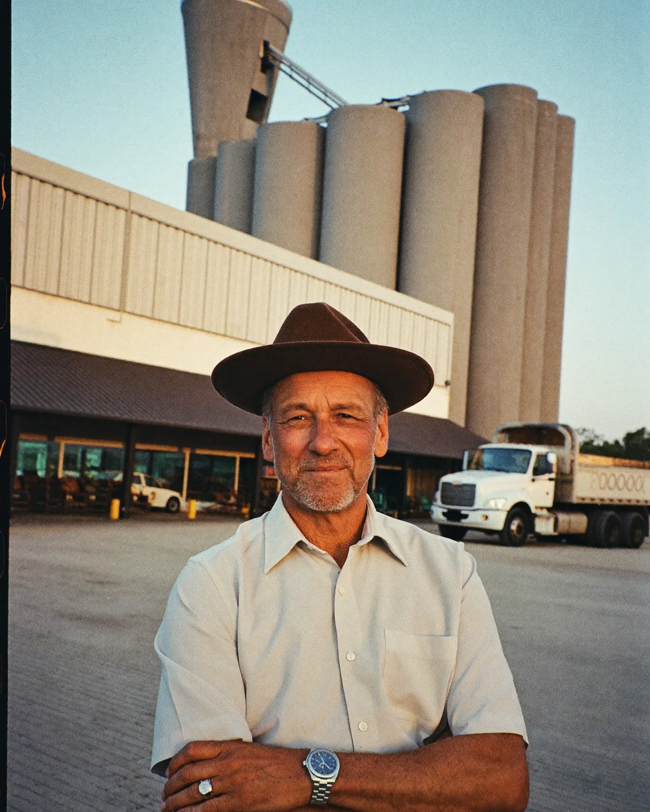

Etapa 2 · Design system · Direção 1b, Livro-caixa · v1.0
A Tulhia funciona como o livro-caixa da fazenda, que alguém de confiança mantém em dia. Os números vêm antes do texto e ficam em coluna, separados por linhas de pauta. O amarelo do marca-texto aparece uma vez por tela, no mês que aperta ou no número que importa.
01Marca
Pauta de 64 unidades. A linha do cabeçalho e a da coluna formam o T, e a casa amarela é o mês marcado. A casa fica na coluna dos valores, embaixo e à direita, onde está o último número da conta.
02Cor
Tinta e almaço fazem quase tudo. O marca-texto aparece uma vez por tela. O vermelho só marca caixa negativo, e sempre vem com texto ou sinal de menos ao lado, porque a cor sozinha não basta.
03Tipografia
Rótulos em mono de 12 a 13 px servem só para nomear coisas. Texto que precisa ser lido nunca fica abaixo de 16 px.
04Espaço e raio
Largura máxima de 1200 px. Margem lateral clamp(20, 4vw, 48). Texto corrido com até 32 em de largura.
05Componentes
05.01 Cabeçalho · fixo no topo, 64 px, regra-forte embaixo. No celular o botão vira só o ícone, com 44 × 44.
05.02 Botões · todos abrem o WhatsApp e têm o ícone dele. Primário com 54 px de altura, secundário com 46, foco com anel de 3 px em marca-texto.
Embaixo de todo botão vem a mesma linha: Abre o WhatsApp. A conversa não obriga a nada.
05.03 Lista de confiança · caixa de conferência marcada, como no livro. Até três itens.
05.04 Lançamento · a ideia da marca em forma de componente: rótulo à esquerda, valor em mono à direita, marca-texto só na linha que importa.
Dados de demonstração
05.05 Faixa de números · fundo tinta, número em 800, explicação em névoa. São três colunas no desktop e uma pilha no celular.
05.06 Citação · fala do produtor, aspas em mono, entre linhas de pauta. Sem barra lateral.
Vendi a safra, paguei o que vencia e o dinheiro sumiu. Não sei dizer para onde foi.
05.07 Abertura de seção · regra-forte, número da folha e nome da seção. Depois, o h2.
03Dívidas
05.08 Cartão de entrega · duas formas. A coluna do livro, para listar o que você recebe, e o cartão, para detalhar uma entrega. Nunca três cartões iguais em fila.
Todas as parcelas, de todos os credores, no dia em que vencem.
Com cada parcela dentro e o mês que aperta marcado.
O que vence nos próximos 15 dias, o total e o dinheiro nas contas.
Maio de 2027: o caixa fica negativo. No pior mês, junho, faltam R$ 492.859.
05.09 Seção escura · fundo tinta, texto em almaço e névoa, cartões em tinta-cartão. No máximo duas por página, nunca seguidas.
07Segurança
O acesso é pelo Open Finance, o sistema regulado pelo Banco Central.
Ninguém da nossa equipe pede a senha do seu banco nem o código que chega no seu celular.
05.10 Moldura de tela do app · folha com borda tinta e faixa de topo com o nome da tela e a etiqueta de demonstração. A captura entra como veio, sem mexer nos dados.
05.11 Passo numerado · número grande em 800 numa coluna de 64 px, regra-forte em cima, sem cartão.
O consultor confere com você o calendário das dívidas, contrato por contrato.
O acesso é só para ver.
05.12 Perguntas · linhas de 60 px no mínimo, sinal de mais em mono, abre no toque.
A Tulhia é um acompanhamento com consultor, com o aplicativo junto. O valor você fica sabendo na primeira conversa, antes de assumir qualquer compromisso.
Depende do banco. Na primeira conversa o consultor olha os seus, um por um.
05.13 Chamada final · foto dos silos com véu de tinta (62% a 90%), três linhas numeradas e botão claro.
05.14 Barra fixa de CTA · só no celular, abaixo de 900 px. Fica presa embaixo e respeita a área segura da tela.
05.15 Rodapé · tinta-fundo. As linhas de LGPD e de pré-lançamento são obrigatórias.
Tulhia
Privacidade (LGPD): esta página não tem formulário e não registra o que você faz nela. Os botões só abrem o WhatsApp.
Produto em pré-lançamento. Prévia para aprovação.
05.16 Fotografia · documental, luz natural, o produtor com a fazenda dele em volta. Cantos retos e proporções 4:5 ou 3:2. Sem filtro e sem texto em cima, a não ser na chamada final.

06Regras